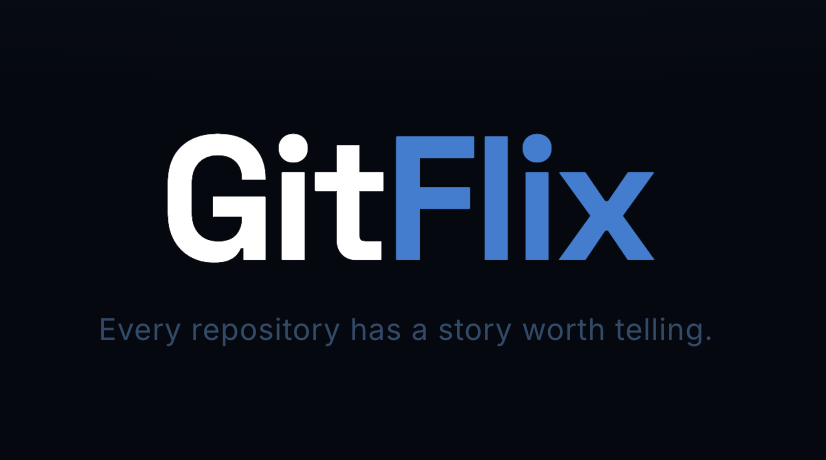
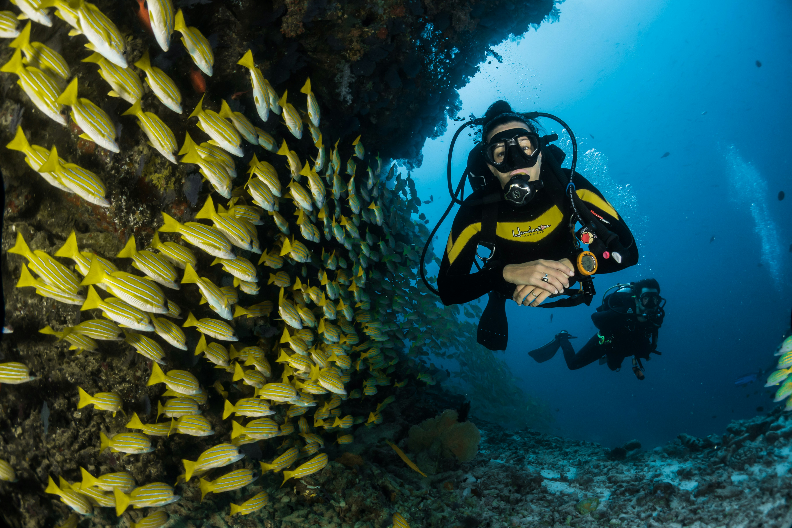
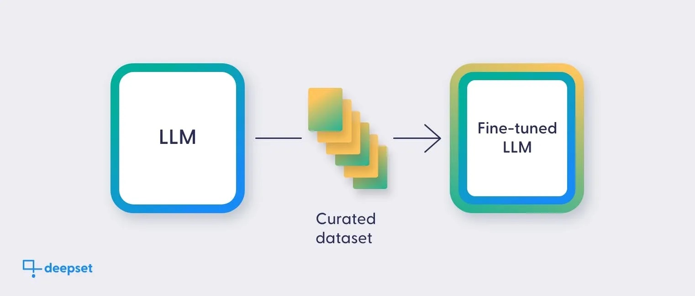

ABOUT ME

HEY,
I AM SAHIL MOHAPATRA,
A COMPUTER SCIENCE UNDERGRADUATE AT
BITS PILANI, DUBAI CAMPUS.
HERE, YOU CAN EXPLORE THE PROJECTS I HAVE WORKED ON.
HEY,
I AM SAHIL MOHAPATRA,
A COMPUTER SCIENCE UNDERGRADUATE AT
BITS PILANI, DUBAI CAMPUS.
HERE, YOU CAN EXPLORE THE PROJECTS I HAVE WORKED ON.





ODEX GLOBAL, DUBAI
AUGUST 2025 – JANUARY 2026
SKOLAR EDTECH, BANGALORE (REMOTE)
JUNE 2024 – AUGUST 2024
B.Tech in Computer Science
Batch 2026
Secondary and Higher Secondary
Batch 2022
Languages: Python, Java, HTML, CSS, JavaScript, SQL
Frameworks/Tools: Git, GitHub, GitHub Actions, BitBucket, uv, Docker, LangChain, HuggingFace, Ollama, FastAPI, Streamlit, Scikit-Learn, TensorFlow, PyTorch, FAISS, ChromaDB, Kafka
Expertise: RAG pipelines, model training, feature engineering, API development
Soft Skills: Team collaboration, communication, critical thinking
Capturing stories through unique perspectives.
Exploring melodies and enhancing focus.
Regular workouts for physical and mental strength.
Experimenting with emerging tools and frameworks.
Discovering cultures and broadening perspectives.